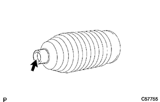
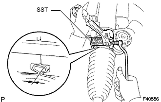
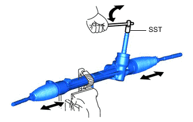

STEERING GEAR REASSEMBLY

PROCEDURE
-
INSTALL NO. 2 STEERING RACK BOOT
-

Apply lithium soap base glycol grease to the inside of the small opening of a new No. 2 steering rack boot.
-
Install the No. 2 steering rack boot to the groove on the rack housing.
Note
-
Be careful not to damage or twist the No. 2 steering rack boot.
-
Make sure that the No. 2 steering rack boot is free of rust and foreign matter.
-
-
-
INSTALL NO. 1 STEERING RACK BOOT
Tech Tips
Perform the same procedure as for the No. 2 steering rack boot.
-
INSTALL STEERING RACK BOOT RETAINER (for LH Side)
-

Using SST, install a new steering rack boot retainer as shown in the illustration.
- SST
- 09521-24010
Clearance 3.0 mm (0.118 in.) or less Note
Be careful not to damage the No. 2 steering rack boot.
-
-
INSTALL STEERING RACK BOOT RETAINER (for RH Side)
Tech Tips
Perform the same procedure as for the LH side.
-
INSTALL STEERING RACK BOOT CLIP (for LH Side)
-
Using pliers, install the steering rack boot clip.
-
-
INSTALL STEERING RACK BOOT CLIP (for RH Side)
Tech Tips
Perform the same procedure as for the LH side.
-
INSPECT STEERING GEAR ASSEMBLY
-

Using SST, rotate the pinion shaft to see if both the left and the right steering rack boots expand and contract smoothly.
- SST
- 09616-00020
If the left and right steering rack boots do not expand and contract smoothly, use new steering rack boot retainers and reinstall the steering rack boots.
-